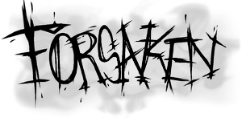
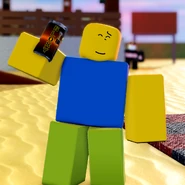

<!DOCTYPE html>
<html lang="en"></html>

<style>
    body {
        background-color: #1a1c2b;
    }

    .container {
        display: flex;
        flex-wrap: wrap;
        gap: 20px;
        padding: 20px;
    }

    .box {
        border: 2px solid #8b0000;
        padding: 15px;
        border-radius: 5px;
        background-color: #1a1a1a;
        flex: 1 1 300px; /* Grow, shrink, min-width */
        min-width: 250px;
    }
</style>

<head>
    <meta charset="UTF-8">
    <meta name="viewport" content="width=device-width, initial-scale=1.0">
    <title>My Web Page</title>
    <link rel="icon" href="../assets/ForsakenLogoInverted.png" sizes="16x16" type="image/png">
    <link rel="stylesheet" href="styles.css">
    <script src="script.js" defer></script>
</head>
<body>
    <header>
        
        <h1 style="color: white;">Horror Survival: Forsaken</h1>
    </header>
    <main>
        <section id="main">
            <h2 style="color: white;">Eternal <span style="color: purple;">Damnation</span></h2>
            
                <h3 style="color: white;">Description</h3>
                    <p style="color: white;">
                        Forsaken is an asymmetrical <span style="color: red;">"killer vs. survival"</span> type game where the
                        survivor's objective is to survive until the timer runs out. The killers, however,
                        have the objective of killing every survivor on the map, each kill granting more
                        time for them to play around with. Survivors however can complete generators to decrease the time.
                        As of the moment, there are 5 killers and 10 survivors, all of them having special gameplay of their own.
                    </p>
                <h2 style="color: white;">Survivors: <span style="color: blue;">Prey</span></h2>
                
                <h3 style="color: white;">Description</h3>
                    <p style="color: white;">
                        Survivors are the people who are <span style="color: red;"><b>DAMNED</b></span> in this eternal hell.
                        Their only objective is to survive until 4 minutes are up. However, each death adds 30 seconds
                        onto the current timer, causing the failure of protecting your teammates being detrimental.
                    </p>
                    <p style="color: white;">
                        There are three types of survivors:
                    </p>
                <h2 style="color: brown;">Sentinel</h2>
                
                    <p style="color: white;">
                        They help the team live by stunning the killer and taking hits for other survivors.
                    </p>
        </section>
        <section id="about">
            <h2>About Section</h2>
                <p>This section contains information about the web page.</p>
    </main>
    <footer>
        <p>&copy; 2024 My Web Page</p>
    </footer>
</body>
</html>
